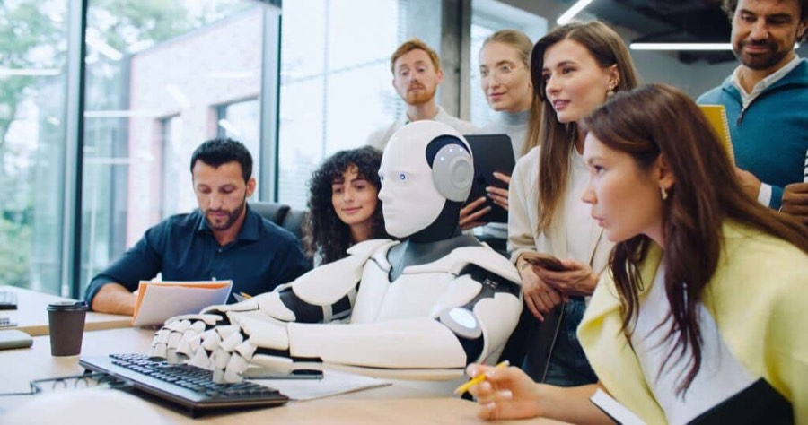
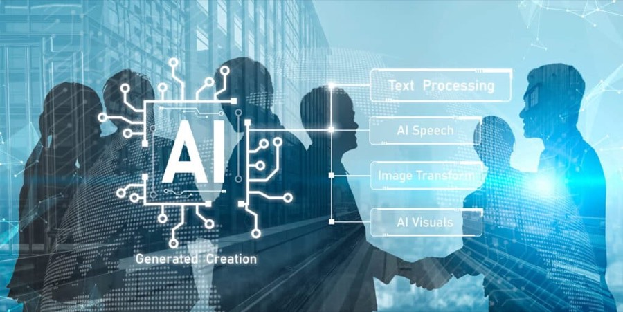
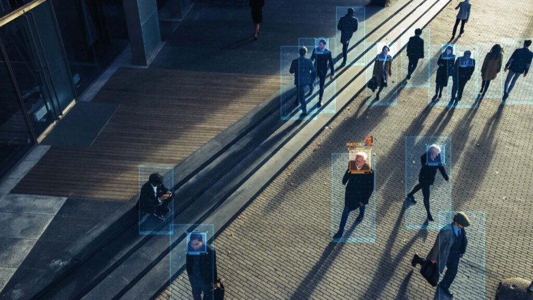
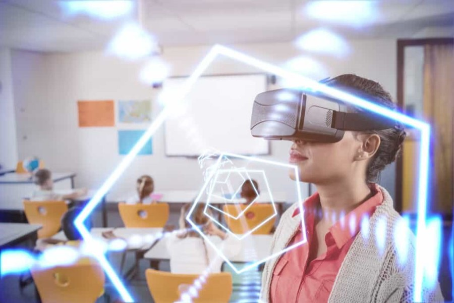

De toekomst van reizen: als je lichaam je paspoort wordt
Biometrische technologie rukt op bij luchthavens en grenscontroles, met kortere wachtrijen en betere beveiliging. Zo wordt je lichaam je paspoort.
28 aprHet algoritme overleven: kun je 100 worden met je pensioen?
Langer leven, minder pensioen en de opkomst van AI; de planning voor onze oude dag moet over een andere boeg.
De opkomst van gepersonaliseerde voeding: hoe AI bepaalt wat jij straks eet
De tijd van standaard voedingsadvies is voorbij. Startups gebruiken AI, DNA en biometrische data om te bepalen welk eten jouw lichaam nodig heeft.

De mens voorbij: hoe technologie robots menselijker én slimmer maakt
De robots van morgen zijn niet alleen sneller en sterker dan wij, maar ook beter in voelen, zichzelf genezen en met de wereld communiceren.

Inbraak in de toekomst: hoe technologie de regels van cybersecurity herschrijft
Cyberaanvallen worden sneller, slimmer en steeds vaker geautomatiseerd. Nu AI en quantumcomputers nieuwe dreigingen brengen: houdt onze beveiliging bij?

Waarom ‘AI-first’ gaan met je bedrijf de sleutel is tot succes
AI-first worden is geen optie meer maar noodzaak. Pioniers plukken al de vruchten, maar waarom worstelen zoveel bedrijven nog met de omschakeling?

Hoe technologie ons veilig kan houden in een wereld vol gevaar
AI, drones en slimme sensoren veranderen hoe we inspelen op gevaar. Maar wat moeten we daarvoor opgeven?

Pikt AI je baan in? De nieuwe realiteit van onze arbeidsmarkt
AI verandert de arbeidsmarkt in een hoog tempo. Welke banen staan onder druk en hoe zorg je dat je als werknemer relevant blijft?

In elk huis een robot: de huishoudrobot komt eraan
De humanoïde robot staat voor de deur. Wie bouwt ze, wanneer lopen ze in huis rond en wat betekent dat voor de samenleving?

De micro-multinational: maakt AI de eenmans-unicorn mogelijk?
AI-agents doen werk waar vroeger legers medewerkers voor nodig waren. Komt de eerste zzp'er met een miljardenwaardering, de eenmans-unicorn, binnen bereik?
Big Brother op het werk: als AI alles en iedereen monitort
Het monitoren van werknemers is inmiddels de standaard op kantoor. Wat betekent dit voor het onderlinge vertrouwen, onze vrijheid en de toekomst van werk?
Hoe universiteiten er in 2050 uitzien (als ze dan nog bestaan)
AI-fraude, diploma's die waarde verliezen en torenhoge kosten: het hoger onderwijs staat onder druk. Hoe zien universiteiten er in 2050 uit?
